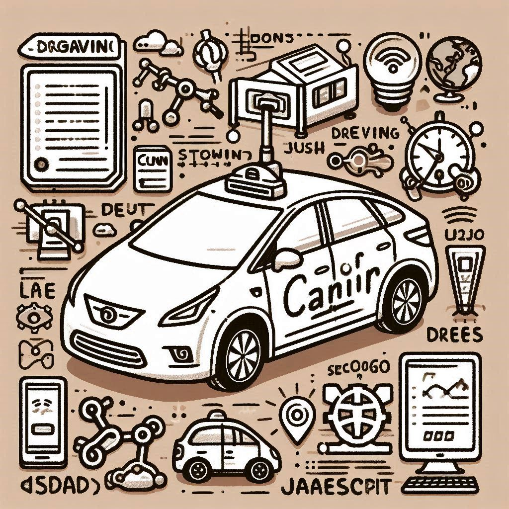

Self-Driving Cars Simulation (Raw JavaScript with CNN)
The Self-Driving Cars Simulation project leverages Convolutional Neural Networks (CNN) to enable a car simulation to autonomously navigate a road. Built with raw JavaScript, this project simulates the car's decision-making process, utilizing CNNs to interpret the environment and avoid obstacles. The project demonstrates the core principles behind autonomous vehicle systems, including image recognition and pathfinding.

Key Features
- Real-time obstacle detection and avoidance using CNN
- Car pathfinding through image analysis
- Simulation of autonomous decision-making in a dynamic environment
- Built with raw JavaScript, without external machine learning libraries
Code Snippet
// Example code snippet for CNN-based decision-making
function cnnPredict(imageData) {
// Assume cnnModel is a pre-trained CNN model loaded in the environment
const prediction = cnnModel.predict(imageData);
if (prediction === 'left') {
turnLeft();
} else if (prediction === 'right') {
turnRight();
} else {
moveForward();
}
}